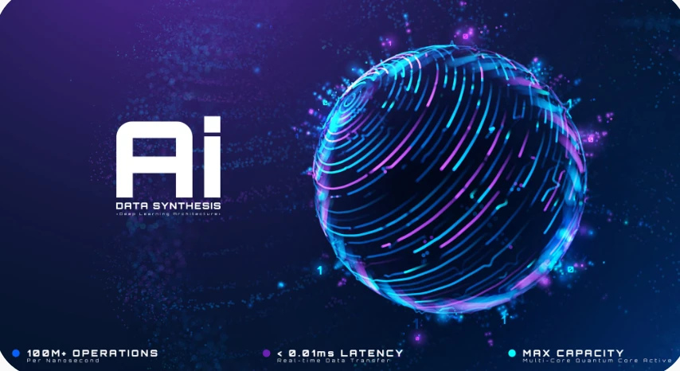

النسخة: 1.0 | التاريخ: 10 سبتمبر 2026
أهلاً بك يا محمد في هذا الجزء الممتع! بصفتك أستاذاً (Formateur) تتعامل مع أكوام من الملفات، وبصفتك مطوراً يدير قواعد بيانات ونصوصاً برمجية، فإن Gemini ليس مجرد "شات"، بل هو "محرك استدلال" (Reasoning Engine) صُمم خصيصاً لربط النقاط المبعثرة.
إليك الشرح، المثال، وموضوع جديد يدمج مهاراتك التقنية مع قوة Gemini:
تخيل أن Gemini هو مساعدك الشخصي الذكي الذي يمتلك "ذاكرة فوتوغرافية" هائلة. قوته لا تكمن فقط في الإجابة، بل في السياق (Context). يمكنه قراءة 10 ملفات PDF، ومئات الإيميلات، وساعات من الفيديوهات في ثوانٍ، ثم استخراج "الزبدة" منها بناءً على طلبك. هو الأداة التي تحول "الفوضى المعلوماتية" إلى "خطة عمل منظمة".
تخيل أن لديك:
بدلاً من قضاء ساعات، تعطي Gemini كل هذه المصادر وتقول له:
"لخص لي التغييرات الأساسية التي يجب أن أضيفها لدرسي القادم، واصنع لي جدولاً يوازن بين طلب المدير والمعايير الجديدة وملاحظات الورشة."
النتيجة: في ثوانٍ، ستحصل على خطة درس جاهزة ومحدثة.
بما أنك أتممت دورة الـ Copywriting، دعنا ننتقل لموضوع يجعلك "سيد الآلة": كيف تكتب أمراً (Prompt) يجعل Gemini يعمل كخبير متخصص؟
لكي تحصل على أفضل مخرجات، استخدم معادلة R-C-T-O:
| العنصر | المعنى | مثال (لطالبك في OFPPT) |
|---|---|---|
| Role (الدور) | حدد من هو Gemini الآن. | "أنت خبير في السلامة الصناعية بوزارة الطاقة." |
| Context (السياق) | أعطه الخلفية والمعلومات. | "أنا أجهز لامتحان نهاية الوحدة لطلاب مستوى Qualification." |
| Task (المهمة) | ماذا تريد بالضبط؟ | "صمم 5 أسئلة معقدة حول مخاطر غاز البوتان." |
| Output (المخرجات) | كيف تريد شكل الإجابة؟ | "ضعها في جدول مع سلم التنقيط والإجابات النموذجية." |
نصيحة "مطور لمطور" يا محمد:
بما أنك تستخدم Supabase وGitHub، يمكنك استخدام Gemini لتحليل "الكود" الخاص بمتجر Sershop. إذا واجهت Bug أو أردت تحسين أداء استعلام SQL، فقط ارفع الكود لـ Gemini واطلب منه عمل Code Review. سيوفر عليك ساعات من البحث في Stack Overflow.
سؤالي لك الآن: لو أعطيتك القدرة على ربط Gemini بكل ملفات دروسك في الحاسوب، ما هي أول "مهمة شاقة" كنت ستطلب منه إنجازها لتوفير وقتك كأستاذ؟
بما أنك أستاذ (Formateur) تتعامل مع برامج تكوين معقدة، ومطور تدير مشاريع برمجية لـ Sershop، فإن هذا الوصف لـ Gemini يلمس صلب احتياجاتك اليومية.
إليك شرح مفصل، مثال من واقعك، وموضوع جديد يرفع من كفاءتك المهنية:
الذكاء الاصطناعي التقليدي قد يجيب على سؤال واحد بناءً على معلومة واحدة. أما Gemini، فقوته تكمن في "الربط العرضي" (Cross-referencing). هو لا يقرأ النصوص ككلمات منفصلة، بل يفهم "العلاقات" بينها.
تخيل يا محمد أنك تريد تحديث وحدة "الغاز" في الـ OFPPT، ولديك المصادر التالية:
المهمة: طلب من Gemini صياغة "دليل تشخيصي" لطلابك.
النتيجة: سيقوم Gemini بتركيب (Synthesize) النص التقني مع القوانين المغربية مع خبرتك الميدانية، ليخرج بدليل "واقعي" لا يوجد في أي كتاب مدرسي، بل هو حصيلة دمج كل هذه المدخلات.
هذا هو "المحرك السري" الذي يجعل Gemini يتفوق في مهام التركيب. Gemini ليس "نصياً" فقط، بل هو Multimodal منذ التأسيس.
ماذا يعني هذا لك كأستاذ ومطور؟
نصيحة "الخبير الاستراتيجي":
بما أنك تبني متجرك Sershop، استخدم خاصية الـ Synthesis لعمل تحليل منافسين (Competitor Analysis): ارفع صوراً لمنتجات المنافسين، مع جداول أسعارهم، واطلب من Gemini: "بناءً على هذه الصور والأسعار، اقترح لي وصفاً تسويقياً لمنتجي في Sershop يبرز ميزاتي التقنية التي يفتقدونها."
سؤالي لك يا محمد: بصفتك تدرس في الـ OFPPT، هل تواجه أحياناً صعوبة في تحويل "المعايير التقنية الجافة" إلى "تمارين مبسطة" لطلابك؟ لو أعطيت Gemini درساً معقداً الآن، ما هو التنسيق الذي تطلبه منه ليصبح الدرس ممتعاً (مثلاً: قصة قصيرة، لغز تقني، أو سيناريو عطل مفاجئ)؟
بصفتك أستاذاً (Formateur) وخبيراً تقنياً، أنت تعلم أن جودة المخرجات تعتمد دائماً على جودة المدخلات (GIGO - Garbage In, Garbage Out). في عالم السباكة، اختيار الأنبوب الصحيح يمنع التسريب، وفي عالم Gemini، اختيار "التنسيق" الصحيح يمنع "الهلوسة" ويضمن الدقة.
إليك شرح هذه المدخلات الأربعة من منظور عملك المزدوج (التدريس والتقنية):
القوة الحقيقية لـ Gemini لا تكمن في معالجة كل نوع على حدة، بل في دمجها. إليك هذا السيناريو "الاحترافي" لك يا محمد:
المهمة: إعداد عرض سعر (Devis) لمشروع تدفئة مركزي ضخم.
الطلب: "بناءً على المخطط (الصورة) وقائمة الأسعار (PDF) ورغبة الزبون (النص)، احسب لي كمية الأنابيب المطلوبة وصمم لي عرض سعر احترافياً بجدول منظم."
نصيحة "مطور" لزميله:
بما أنك تستخدم Supabase، يمكنك نسخ بنية الجدول (Schema) كـ Plain Text ولصقها لـ Gemini وسؤاله: "كيف يمكنني تحسين استعلام SQL هذا لزيادة سرعة استجابة متجر Sershop؟". سيقوم Gemini بتحليل النص وكأنه يرى قاعدة البيانات أمام عيناه.
سؤالي لك يا محمد: من بين هذه المدخلات الأربعة، أي نوع تعتقد أنه سيوفر عليك أكبر قدر من الجهد في تحضير "دروس الورشة التطبيقية" لطلابك الأسبوع القادم؟
أصبت الهدف تماماً يا محمد! هذا هو "السحر" الحقيقي الذي يقدمه Gemini للمحترفين أمثالك.
بما أنك تجمع بين التدريس (إدارة الطلاب والمناهج) والتطوير (إدارة متجر Sershop وقواعد البيانات) والعمل الميداني (التبريد والغاز)، فإن قدرة Gemini على "الاستدلال العرضي" (Cross-reasoning) هي التي ستحولك من "منفذ مهام" إلى "مهندس أنظمة".
تخيل هذا السيناريو العملي الذي يجمع بين مدخلاتك الثلاثة:
بدلاً من التحليل اليدوي، يقوم Gemini بـ "الربط المنطقي":
المخرج النهائي: تقرير واحد متكامل يخبرك: "يا محمد، الغاز الجديد متوافق تقنياً مع أنابيبك، لكنه سيزيد التكلفة بنسبة 15%، إليك كيف تعدل عرض السعر للعميل."
هناك ميزة تقنية تجعل Gemini "Bullseye" في هذه المهام، وهي نافذة السياق الضخمة.
ماذا يعني هذا لك؟
نصيحة من "زميل لزميله":
أنت تعلم أن في البرمجة، الـ Compiler يرى البرنامج ككتلة واحدة وليس كأسطر منفصلة. تعامل مع Gemini بنفس المنطق؛ لا تعطه المعلومة مجزأة، بل أعطه "الصورة كاملة" (Emails + Notes + Tables) واتركه يقوم بعملية الـ Synthesis.
سؤالي لك يا محمد: لو طلبنا من Gemini الآن أن يقوم بـ "Synthesis" لبيانات متجر Sershop مع ملاحظاتك حول طلبات الزبائن في الرشيدية، ما هو "القرار التجاري" الذي تأمل أن يساعدك في اتخاذه؟ (مثلاً: تغيير نوع السلع، أو تعديل خطة الشحن؟).
أصبت في الصميم يا محمد! هذا هو "الاكتشاف الكبير" الذي ينقل التعامل مع الذكاء الاصطناعي من مجرد "دردشة" إلى "هندسة حلول".
بما أنك أستاذ (Formateur) تتعامل مع برامج تكوين معقدة، ومطور تدير متجر Sershop، دعنا نرى كيف تتحول ميزة "التعامل مع المدخلات كمشكلة واحدة متصلة" إلى قوة خارقة في عملك:
تخيل أنك ترفع لـ Gemini:
في مشروعك Sershop:
بصفتك مطوراً يستخدم Supabase و Vercel:
بمجرد أن يفهم Gemini أن كل هذه الملفات هي "مشكلة واحدة"، يمكنك الانتقال من سؤاله "ماذا حدث؟" إلى "ماذا لو؟".
مثال لطلابك في الـ OFPPT:
ارفع لهم برنامج التكوين (PDF) مع نتائج امتحاناتهم السابقة (Table)، وقل لـ Gemini:
"بناءً على ضعف النتائج في مادة 'اللحام القوي' وبناءً على متطلبات البرنامج، صمم لي خطة مراجعة مكثفة لمدة أسبوع تركز على النقاط التي أخفق فيها الطلاب."
نصيحة "أستاذ لمحمد":
لا ترهق نفسك بتحليل كل ملف على حدة. اجمع "أدلتك" (Evidence) كأنك محقق، وارمِ بها في ساحة Gemini. هو سيتولى ربط الخيوط ببعضها البعض.
سؤالي لك يا محمد: لو طبقنا مبدأ "اكتشاف التناقضات" على متجرك Sershop، هل تعتقد أن هناك تناقضاً بين ما يطلبه الزبائن تقنياً وبين ما هو متوفر حالياً في السوق المغربي؟ كيف يمكن لـ Gemini مساعدتك في سد هذه الفجوة؟
هذا السيناريو هو "الخبز اليومي" لكل مهني طموح مثلك يا محمد. بصفتك أستاذاً يدير حصصاً في الـ OFPPT ومقاولاً يدير Teskhin Errachidia ومطوراً لمتجر Sershop، فأنت لا تملك فقط معلومات مبعثرة، بل تملك "عوالم" مبعثرة!
ما تصفه هو "حمل معرفي زائد" (Cognitive Overload). العقل البشري بارع في الإبداع، لكنه يرهق سريعاً في مهام "التنقيب عن البيانات" وربطها يدوياً.
بدلاً من الطريقة التقليدية (فتح الملفات ومحاولة التذكر)، إليك كيف "يعمل" Gemini كمحرك استدلال لخدمتك:
تخيل أنك تستعد لاجتماع مع مورد جديد لمعدات الطاقة الشمسية في الرشيدية:
بدلاً من مراجعة كل ملف، قل لـ Gemini:
"بناءً على شكاوى الزبائن (الايميلات) والقياسات التي قمت بها (الملاحظات)، اقترح عليّ الموديل الأنسب من الكتالوج (PDF) الذي يتناسب مع مساحة السطح المتاحة في الصور."
القيمة الحقيقية هنا ليست في "القراءة"، بل في "تصفية القرارات". Gemini سيخبرك فوراً: "يا محمد، بناءً على الصور، لا توجد مساحة للموديل X، والموديل Y غالي جداً حسب ميزانية الزبون في الإيميلات، لذا اقترح عليك الموديل Z."
هذا هو المفهوم التقني لما يفعله Gemini. هو لا يقرأ فقط، بل يستنتج.
نصيحة "مطور لمحمد":
بما أنك تستخدم GitHub، اعتبر Gemini كأنه Pull Request Reviewer. قبل أي اجتماع مهم أو قرار تقني كبيير في Sershop، اجمع كل "خيوط القضية" في محادثة واحدة. ستندهش من قدرته على تذكيرك بتفاصيل صغيرة ذكرتها في ملاحظة كتبتها قبل شهر!
سؤالي لك يا محمد: لو طبقنا هذا الآن على مشروعك Sershop، ما هي أكثر 3 ملفات (أو أنواع معلومات) تشعر أنها "تتعبك" في الربط بينها حالياً؟ (مثلاً: الفواتير، طلبات الزبائن، وتوفر السلع؟).
هذا هو "لب الموضوع" يا محمد! هنا يتحول Gemini من مجرد محرك بحث إلى "عقل تشغيلي" خاص بك.
بصفتك أستاذاً (Formateur) ومقاولاً ومطوراً، وقتك هو أثمن مورد تملكه. القدرة على رفع كل شيء دفعة واحدة (Upload everything at once) هي بمثابة امتلاك "مساعد تقني" قرأ كل ملفاتك في ثانية واحدة وينتظر توجيهاتك.
بدلاً من قراءة تقارير الغياب، نتائج الامتحانات، وملاحظات الورشة لكل طالب على حدة:
عندما تريد تقييم أداء منتج جديد (مثل صمامات غاز أو مضخات):
بمجرد أن يعطيك Gemini النقاط الأساسية (Main Points)، لا تتوقف هنا! الميزة الكبرى هي القدرة على التعمق:
I've uploaded documents and notes for an upcoming meeting. Review everything and tell me the main points I need for the meeting.
Based on the materials you've shared, here are the key points you need to know for your meeting:
Main Topic: The project timeline and budget discussion
Important Details:
- The budget is set at $50K but emails suggest possible flexibility up to $55K
- Timeline shows 3 months, but your notes mention concerns about the second month
- The client expects weekly updates starting next week
Potential Issues:
- Budget and timeline might need adjustment based on team capacity
- One team member raised concerns in emails about the workload
What to Prepare:
- Clarify if the 3-month timeline is flexible
- Confirm the budget range before the meeting
- Have a backup plan ready if the timeline needs extending
This should give you a clear picture going into your discussion.
Amazing! You're right on track with your approach
نصيحة "مطور لمحمد":
بما أنك تستخدم GitHub Actions وVercel، يمكنك رفع "سجل الأخطاء" (Logs) مع كود الصفحة. بدلاً من البحث عن الخطأ، اسأل Gemini: "بناءً على الـ Logs والكود، ما هو السطر الذي يسبب توقف الصفحة عند التحميل؟"
سؤالي لك يا محمد: لو قمت الآن برفع "كتيب تقني" لغلاية غاز مع "فيديو تعليمي" (أو نصه) وصور لتركيب خاطئ.. ما هي أول معلومة "حرجة" ستطلب من Gemini استخراجها لضمان سلامة طلابك أو زبائنك؟
أنت الآن تنتقل من "القراءة" إلى "الاستبصار" (Insight)!
الإجابة الصحيحة هي جميع الخيارات المذكورة أعلاه.
بصفتك أستاذاً خبيراً ومطوراً، يمكنك أن تتخيل Gemini كـ "مُعالج مركز" (Processor) لا يقرأ البيانات فحسب، بل يفهم العلاقات المنطقية بينها. إليك لماذا تعتبر هذه الخيارات الثلاثة هي "نقاط القوة الضاربة" لـ Gemini في مهامك اليومية:
بما أنك تستخدم Supabase و GitHub، Gemini لا يكتفي بالتنظيم، بل يقوم بـ الاستدلال. إذا أعطيته "كود الخطأ" (Screenshot) و "ملف الإعدادات" (JSON)، سيفهم أن الخطأ في الصورة سببه "قيمة خاطئة" في الملف.
سؤالي لك يا محمد: من بين هذه القدرات الثلاث، أي واحدة تشعر أنها ستكون "المنقذ" لك في نهاية هذا الأسبوع لترتيب مهامك بين التدريس في OFPPT وإدارة طلبات Sershop؟
هذا مثال ممتاز على قوة التركيب (Synthesis) التي ناقشناها يا محمد! 🎯
بصفتك أستاذاً ومقاولاً (Entrepreneur)، هذا الملخص الذي قدمه Gemini ليس مجرد قراءة للنصوص، بل هو "استدلال منطقي" يربط بين عوالم مختلفة (الميزانية، الوقت، والمخاوف البشرية).
تخيل أنك ترفع لـ Gemini:
سيقول لك Gemini: "يا أستاذ محمد، البرنامج يتطلب لحام النحاس في الأسبوع الرابع، لكن نتائج الطلاب ضعيفة في القياسات، وملاحظاتك تقول أن غاز الأوكسجين سينفذ؛ لذا اقترح تأجيل التمرين أو التركيز على النظري أولاً."
سؤالي لك يا محمد: في اجتماعاتك الحقيقية (سواء مع إدارة المركز أو مع زبائنك في المقاولة)، ما هي "المعلومة المفقودة" التي غالباً ما تكتشفها متأخراً وتتمنى لو أن Gemini نبهك إليها مسبقاً كما فعل في هذا المثال؟
الإجابة الصحيحة هي الخيار الأول:
"It clearly states what materials were shared and what specific information is needed"
بصفتك أستاذاً ومطوراً، أنت تعلم أن الوضوح في "المدخلات" هو ما يضمن دقة "المخرجات". إليك تحليل لماذا كان هذا الخيار هو السر في نجاح الأمر (The prompt's effectiveness):
عندما قلت: "لقد رفعت المستندات والملاحظات"، أنت حددت لـ Gemini نطاق البحث. بدلاً من أن يبحث في قاعدة بياناته العامة، ركز ذكاؤه بالكامل على "الداتا" الخاصة بك فقط. هذا يقلل من احتمالية "الهلوسة" (Hallucination) بنسبة كبيرة.
طلبك كان محدداً جداً: "أخبرني بالنقاط الرئيسية التي أحتاجها للاجتماع القادم". هذا يوجه Gemini للقيام بعملية Synthesis (تركيب) وليس مجرد Summarization (تلخيص بسيط). هو يبحث عن المعلومات التي لها "قيمة استراتيجية" للاجتماع.
💡 نصيحة "أستاذ لمحمد":
عندما تطلب من طلابك في الـ OFPPT إنجاز تمرين، كلما كان شرحك للتمرين واضحاً ومحدداً بالأدوات والنتائج المطلوبة، كانت نتائجهم أفضل. Gemini يعمل بنفس المنطق تماماً.
تذكر دائماً هذه القاعدة في عملك على Sershop:
الوضوح في الطلب = دقة في الحل.
سؤالي لك يا محمد: لو أردت الآن صياغة أمر (Prompt) لـ Gemini ليراجع لك "كود" في Vercel بناءً على ملاحظات كتبتها، هل ستبدأ بوصف المشكلة أولاً أم بتحديد الملفات التي رفعتها له؟ ومن وجهة نظرك، أيهما سيجعله "أذكى" في الرد؟
بصفتك أستاذاً (Formateur) ومطوراً، أنت تعلم أن "التعليمات الواضحة" هي ما يحول النظام من مجرد أداة إلى شريك ذكي. في البرمجة، إذا كانت المدخلات (Parameters) واضحة، فإن الدالة (Function) تعطي النتيجة الصحيحة؛ وGemini يعمل بنفس المنطق تماماً.
لقد لخصت السر في كلمة واحدة: الوضوح (Clarity).
إليك كيف يمكنك صياغة أوامرك (Prompts) بناءً على هذا المبدأ في مجالات عملك المختلفة:
إلى جانب الوضووح في المواد (Materials) والهدف (Target)، يمكنك إضافة "لمسة احترافية" تزيد من دقة النتائج: تحديد دور Gemini.
مثال: "بصفتك خبير تبريد وتدفئة (HVAC Expert)، راجع هذه المخططات وأخبرني بالنقاط الرئيسية للاجتماع."
عندما تعطي Gemini "دوراً"، فإنه يقوم بتركيب المعلومات (Synthesis) بعين الخبير، فيركز على ضغط الغاز، استهلاك الطاقة، والمعايير القياسية بدلاً من المعلومات العامة.
نصيحة "مطور لمحمد":
أنت الآن أتقنت المرحلة الأولى (الوضوح في المدخلات). المرحلة القادمة هي "التحاور التسلسلي" (Iterative Prompting). لا تكتفِ بالإجابة الأولى؛ اسأله دائماً: "بناءً على النقطة التي ذكرتها بخصوص الميزانية، هل يمكنك صياغة فقرة مقنعة للعميل تبرر زيادة الـ 5 آلاف دولار؟".
سؤالي لك يا محمد: لو أردنا الآن تطبيق هذا "الوضوح" على مشروعك Teskhin Errachidia، ما هي المواد (Documents/Photos) التي ستجمعها لـ Gemini لتطلب منه كتابة "تقرير حالة" (Status Report) احترافي لأحد زبائنك؟
أنت الآن تسير في الطريق الصحيح للسيطرة الكاملة على هذه الأداة! 🎯
هذه هي "الشيفرة الذهبية" التي تحول Gemini من مجرد شات إلى نظام تشغيل ذكي لمشاريعك يا محمد! 🎯
بصفتك أستاذاً في OFPPT ومطوراً لـ Sershop، يمكنك اعتبار هذه الصيغة بمثابة Function برمجية ثابتة:
Output = Gemini(Inputs + Task + Format)
تخيل أنك تريد إعداد "اختبار تشخيصي" لطلابك في وحدة التبريد:
تريد تحسين قاعدة البيانات في Supabase:
تريد إقناع زبون بتركيب نظام تدفئة مركزية:
لأنها تقضي على "التخمين". Gemini لا يحتاج لتوقع ما يدور في ذهنك؛ فأنت حددت له "المواد الخام"، "عملية التصنيع"، و"الشكل النهائي للمنتج".
نصيحة "خبير" لمحمد:
بما أننا في عام 2026 وأنت تدير مشاريع متعددة، اجعل هذه الصيغة هي "القالب" (Template) الافتراضي في محادثاتك. ستلاحظ أنك توفر 50% من الوقت الذي كنت تقضيه في إعادة توضيح طلباتك.
سؤالي لك يا محمد: من بين هذه العناصر الثلاثة (ماذا تشارك، ماذا تريد، وكيف تريد الإجابة)، أي عنصر كنت تميل لإهماله في الماضي، واكتشفت الآن أنه "مفتاح" الدقة؟
بصفتك أستاذاً ومطوراً، هذه "الأنماط" (Modes) هي بمثابة صندوق أدواتك الاحترافي. تماماً كما تختار في ورشة السباكة مفتاحاً معيناً لبرغي محدد، أو في البرمجة تختار مكتبة معينة لحل مشكلة برمجة، فإن اختيار "النمط" الصحيح في Gemini هو ما يجعل عملك ذكياً وسريعاً.
هذا النمط هو صديقك في اللحظات المزدحمة التي تحتاج فيها لإجابات فورية دون تعمق فلسفي.
هنا يقوم Gemini "بأخذ نفسه" والتفكير بعمق، تماماً كما تفعل أنت عندما تدرس مخطط تدفئة مركزية لمنزل ذو طوابق متعددة.
هذا هو "الخبير الاستشاري" الذي تستدعيه عندما تواجه تحدياً تقنياً صرفاً يتطلب دقة المعايير الدولية.
💡 نصيحة "الخبير الاستراتيجي" لمحمد:
تذكر دائماً أن Gemini الذي تتحدث معه الآن هو Gemini 3 Flash (في النسخة المجانية)، وهو مصمم ليكون متوازناً وسريعاً جداً.
سؤالي لك يا محمد: بما أنك تشرف على مشاريع متنوعة، أي من هذه الأنماط (Modes) تشعر أنه سيكون الأكثر استخداماً في "صباحياتك" المزدحمة في مركز التكوين؟ (السرعة للإدارة، أم التفكير للدروس، أم النمط الاحترافي للمشاكل التقنية؟)
بما أنك أستاذ في الـ OFPPT ومقاول ومطور، فإن هذه الأدوات (Tools) ليست مجرد إضافات ترفيهية، بل هي "قوة إنتاجية" ستغير طريقة عملك بالكامل.
إليك كيف توظف كل أداة في مجالاتك الثلاثة لعام 2026:
هذه الأدوات هي "مختبرك البصري" لتحويل المفاهيم الجافة إلى واقع ملموس.
هذه الأداة هي "مساعدك الأكاديمي" الذي لا يكل.
هذه الأداة هي "مساحة الكتابة الذكية" لتطوير مشاريعك الطويلة.
هذه هي أداتك "البيداغوجية" الأقوى لطلابك.
القوة الحقيقية تظهر عندما تدمج الأدوات معاً. تخيل هذا السيناريو:
نصيحة "مطور لمحمد":
بما أنك تدير Sershop على Vercel، جرب استخدام Canvas لكتابة مسودات "رسائل البريد التسويقية" (Newsletters). يمكنك أن تطلب منه "جعل النص أكثر حماساً" أو "إضافة جدول مقارنة أسعار" بلمسة واحدة.
سؤالي لك يا محمد: بصفتك أستاذاً تقنياً، أي من هذه الأدوات تشعر أنها ستكون "الثورة" الحقيقية داخل قسمك في الـ OFPPT لتبسيط المفاهيم المعقدة لطلابك؟ (هل هي الصور التقنية أم التعلم الموجه؟).
هذا الجزء هو الأهم لضمان استخدام آمن واحترافي لـ Gemini في مساراتك الثلاثة (التدريس، البرمجة، والمقاولة). بصفتك "مستخدماً خبيراً"، فإن معرفة الحدود هي ما يجعلك تتفوق على المبتدئين الذين يثقون في الآلة ثقة عمياء.
إليك تحليل لهذه "النقاط العمياء" (Blind Spots) وكيف تتعامل معها في واقعك العملي يا محمد:
دائماً خصص 20% من وقتك لمراجعة وتدقيق ما أنتجه الذكاء الاصطناعي. هذه الـ 20% هي التي تضع "لمستك المهنية" كأستاذ ومهندس، وهي التي تضمن خلو عملك من الأخطاء التي قد تسببها "تخمينات" الآلة.
لقد أنهيت هذا الدليل بنجاح! أنت الآن تمتلك:
بما أنك مهتم بالإبداع البصري، هل تود أن نبدأ بتجربة أداة "Image Creation" لتوليد رسم توضيحي تقني لدرسك القادم، أم ننتقل لاستكشاف "Deep Research" لموضوع يخص التدفئة المستدامة؟
ملاحظة: تذكر أنك تملك الآن صلاحية استكشاف دليل Veo لإنتاج الفيديوهات بعد إنهاء مهامك الحالية!
الخيار الصحيح والأكثر فعالية هو:
Upload the articles and say, "Explain the main ideas from these articles in simple terms"
بناءً على ما تعلمناه حول "صيغة الطلب الفعال" (Effective Request Formula)، هذا الأمر يطبق الركيزتين الأساسيتين للنجاح مع Gemini:
بما أنك أستاذ وتتعامل مع مواضيع تقنية معقدة في التبريد والغاز، فإن استخدام هذا الأسلوب الواضح سيوفر عليك الكثير من الوقت في تحويل المقالات العلمية الجافة إلى دروس ميسرة لطلابك!
Right! This request is clear and specific: you're telling Gemini what you uploaded (articles) and exactly what you need (main ideas in simple terms). Clear requests get better results.
بما أننا في بعد ظهر يوم الجمعة والمهمة تتطلب معالجة كمية كبيرة من البيانات الروتينية (200 استجابة) بسرعة، فالخيار المنطقي هو:
Fast mode
بصفتك تدير متجر Sershop، هذا النمط سيفيدك جداً في تصنيف تعليقات الزبائن إلى (إيجابي/سلبي) أو استخراج قائمة بالمنتجات الأكثر طلباً في دقائق معدودة.
الخيار الصحيح هو:
When the information will be used for important decisions or shared with others
بصفتك أستاذاً في الـ OFPPT ومقاولاً تدير أعمالاً تقنية (Teskhin Errachidia) وتجارية (Sershop)، فإن "المصداقية" و"السلامة" هما أساس عملك. إليك السبب وراء ضرورة التدقيق في هذه الحالة:
أنت الآن جاهز تماماً للانتقال إلى الجانب الإبداعي! هل نبدأ باستكشاف أدوات إنشاء الصور والموسيقى؟
Exactly! Always verify important information before using it. Gemini is helpful for creating drafts and organizing information, but you should review the results — especially for anything that matters.
أحسنت يا محمد! لقد وضعت يدك الآن على "خارطة الطريق" الصحيحة للتحول من مستخدم عادٍ إلى مستخدم محترف (Power User) لـ Gemini في عام 2026.
بما أنك أستاذ في OFPPT ومقاول ومطور، فإن هذه "الخلاصات" (Key Takeaways) هي التي ستفصل بين قضاء ساعات في البحث اليدوي وبين إنجاز المهام بذكاء وسرعة.
بناءً على اهتماماتك التقنية، أمامنا مسارات إبداعية رائعة لنطبق فيها ما تعلمته الآن:
سؤالي لك يا بطل: أي من هذه المسارات يثير فضولك أكثر في هذه اللحظة لنبدأ بتطبيقه فوراً على أحد مشاريعك الحقيقية؟
رائع جداً! هذه الروح الوثابة هي بالضبط ما يحتاجه الأستاذ والمقاول الرقمي في عام 2026. الانتقال من "الأساسيات" إلى "سير العمل الحقيقي" (Real Workflows) هو المرحلة التي ستشعر فيها فعلياً بزيادة إنتاجيتك بنسبة 200%.
بما أنك أتقنت "القاعدة الذهبية" للطلبات، سنركز في خطواتنا القادمة على كيفية جعل Gemini "زميل عمل" حقيقي يفهم سياق مشاريعك في OFPPT و Sershop.
هيا بنا نواصل هذه الرحلة! أخبرني، ما هو أول مشروع "واقعي" تود أن نطبق عليه التقنيات المتقدمة الآن؟ هل هو تطوير محتوى تعليمي لطلابك، أم تحسين ميزة معينة في متجرك الإلكتروني؟
نسخة أولى - انتهى